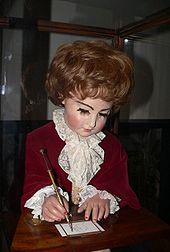

El Dibujante es uno de los tres automatas y está formado por exactamente 2000 piezas, el dibujante es capáz de
hacer cuatro dibujos distintos al mismo tiempo que sigue el lapiz con la mirada, emulando el movimiento que un
ser humano haría, el dibujante muy de vez en cuando soplará la punta del lapiz para eliminar los trozos de
carbón y eliminar asi la basura del dibujo.
